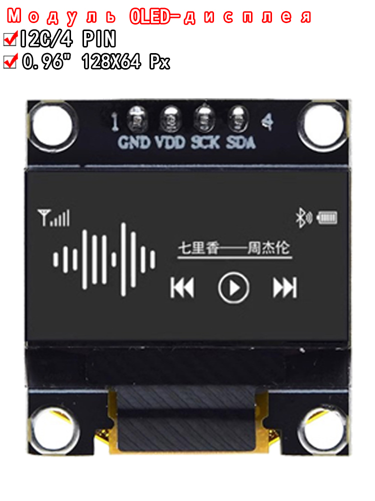

OLED дисплей 0.96" 128x64 I2C, белый
Излучатели (LED, дисплеи)Категория
Излучатели (LED, дисплеи)
Диагональ
0,96″
Разрешение
128×64 пикс.
Цвет свечения
белый
Тип дисплея
OLED, монохромный
Контроллер
SSD1306
Интерфейс
I2C
Разрядность яркости
256 уровней
Рабочее напряжение логики
1,65–3,3 В
Память экрана
128×64 бит SRAM
Температура работы
-40…+85 °C
Кратко
Это монохромный OLED-дисплей 0,96″ с разрешением 128×64 и интерфейсом I2C, обычно на контроллере SSD1306. Подходит для вывода текста, простых графиков, иконок и интерфейсов в компактных проектах.
Описание
Деталь обычно используется как малогабаритный графический индикатор для микроконтроллеров и одноплатных компьютеров. Каноническая основа таких модулей — контроллер SSD1306, который поддерживает 128×64 матрицу, I2C-интерфейс и встроенный буфер кадра. Для подобных модулей характерно монохромное белое свечение, малое энергопотребление и отсутствие подсветки. Типичное применение — часы, датчики, меню устройств, измерительные приборы и портативная электроника.
Документация
Официальная страница SSD1306 от Solomon SystechОфициальный datasheet SSD1306 от Solomon SystechСтраница линейки OLED Display у Solomon Systech
id hw-2026-033